合併、拆分、刪頁：頁面整理教學
閱卷拿到的卷證，常常有掃反的頁、夾在中間的空白頁，或是想把幾份合成一份、把一大卷拆成幾份。「頁面整理」把每一頁排成縮圖，選好頁再按按鈕；做完的樣子在輸出前就能逐頁預覽。
這個工具做什麼
「頁面整理」在首頁的「頁面」那一組。放入 PDF 後，每一頁排成縮圖，可以：
- 合併：放好幾份，頁面依序接在一起。
- 拆分：在指定的頁拆開、每幾頁拆一份，或依第一層書籤拆開。
- 重排：拖曳縮圖換順序。
- 旋轉、刪頁。
- 找空白頁：找出疑似空白的頁，由你確認後再刪。
改錯了可以按「復原」。原本的 PDF 不會被改動，輸出的是另存的新檔。
第一步：放入 PDF（要合併就放好幾份）
從首頁或側邊欄點「頁面整理」，把 PDF 拖進來，或按「選擇檔案…」。只整理一份就放一份；要合併的話可以一次放好幾份，下一步也能再加。
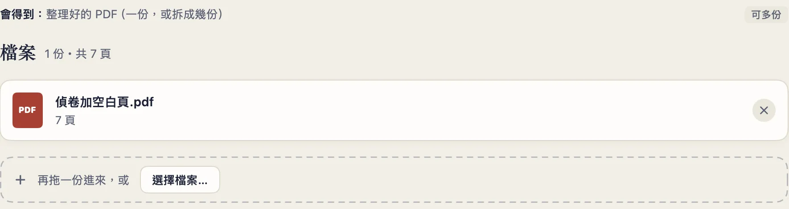
放好幾份時，頁面照清單的順序接在一起。有開啟密碼的 PDF 會先問密碼（見密碼教學）。按右上角的「下一步：整理頁面」。
第二步：選頁
第二步是縮圖格。上面一列寫著檔名與頁數（合併時寫「2 份合併・8 頁」），右邊是動作按鈕。
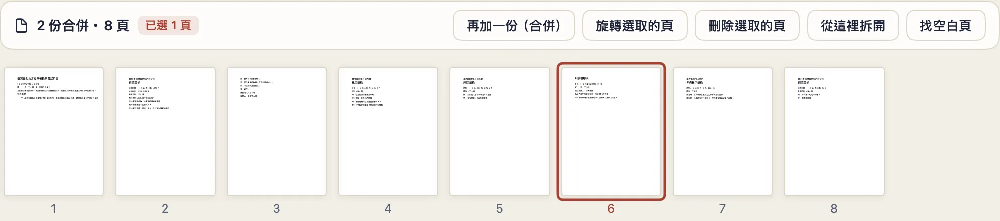
- 點縮圖選那一頁，選到的頁有朱紅框，再點一次取消。
- 按住 ⌘ 再點，可以加選；按住 Shift 再點，選一個範圍。上面會寫「已選 N 頁」。
- 在縮圖上按右鍵，有「旋轉」「從這裡拆開」「刪除」。
- 這一步也可以按「再加一份（合併）」，再放一份 PDF，頁面接在最後面。
300 頁的卷也可以直接捲動看縮圖，縮圖是捲到才載入。
旋轉、刪除、重排、從這裡拆開
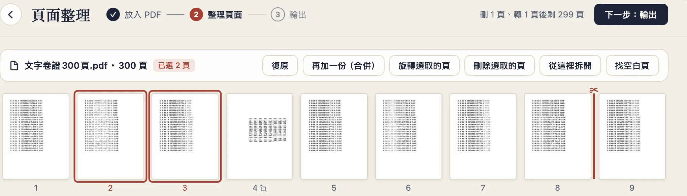
- 旋轉選取的頁：每按一次順時針轉 90 度，縮圖照新的方向顯示，頁碼旁多一個旋轉記號。
- 刪除選取的頁：拿掉選到的頁。Mac 也可以按 Delete 鍵。不能把所有頁都刪掉。
- 拖曳縮圖換順序。選了好幾頁時，拖其中一頁，整組一起搬。
- 從這裡拆開：從選到的第一頁開始拆成新的一份，那一頁前面出現朱紅線與剪刀。再按一次取消。第 1 頁不能拆。
- 復原：做過任何修改之後才會出現，一次退一步。Mac 也可以按 ⌘Z。
右上角會寫目前的結果，例如「刪 1 頁、轉 1 頁後剩 299 頁」。這時還沒有產生任何檔案。
找空白頁
按「找空白頁」，上方顯示「正在找疑似空白的頁…」與進度。找完後，疑似空白的頁用虛線框標出來，縮圖下面標「空白？」（很可能是空白）或「可能空白」。
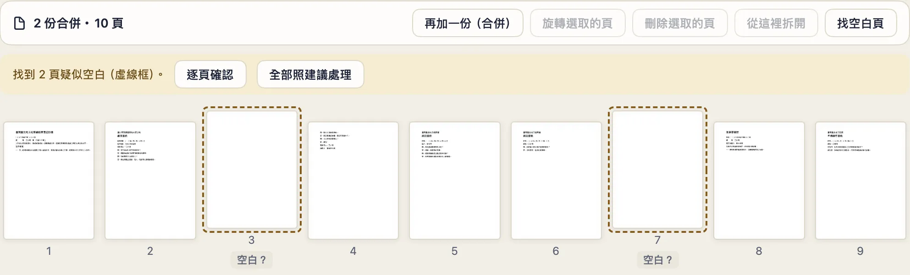
上方的說明列有兩個按鈕：
- 逐頁確認：打開「逐頁確認疑似空白的頁」，每一頁放大顯示，附上信心的百分比與判斷的理由。很可能是空白的已先勾好，其餘的自己看縮圖決定要不要勾，按「刪除勾選的 N 頁」。
- 全部照建議處理：直接刪掉很可能是空白的頁。有些頁只是「可能空白」時，這個按鈕會變成「刪除很可能空白的 N 頁」，只刪把握高的那些。
沒找到時會寫「沒有找到疑似空白的頁。」
判斷只看頁面上的墨色。淡淡的鉛筆字、很淡的掃描也可能被當成空白，所以 App 不會自己刪，一定要你按下去才刪。刪錯了按「復原」。另外，App 不會偵測頁面方向，掃反的頁要自己看縮圖找出來旋轉。
整理好了，按右上角的「下一步：輸出」。
第三步：選輸出方式
輸出設定的「輸出方式」有四種：
- 存成一份 PDF：照整理好的樣子存成一份。
- 在「從這裡拆開」的地方拆開：上一步按過「從這裡拆開」的地方拆成好幾份。有拆開的地方時，這一項會自動選好；沒有時，選了會寫「還沒有『從這裡拆開』的地方」，不能輸出。
- 每 N 頁一份：輸入每幾頁一份。
- 依第一層書籤拆開：每個第一層書籤一份。
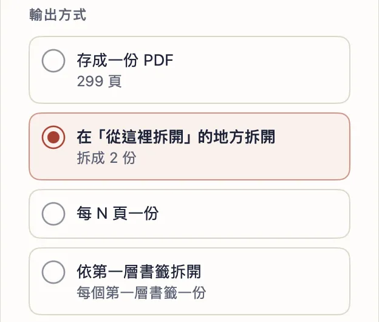
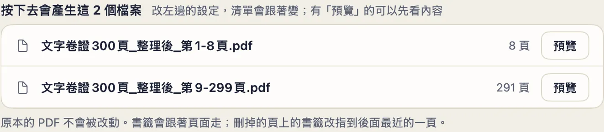
右邊列出會產生的檔案和頁數，有「預覽」的可以先一頁一頁翻，看到的就是輸出後的樣子。
大卷想切成固定頁數，選「每 N 頁一份」：
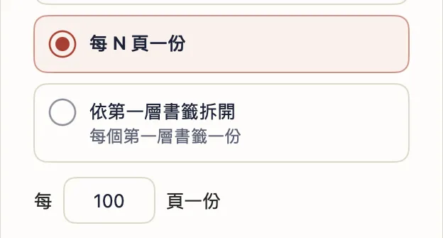
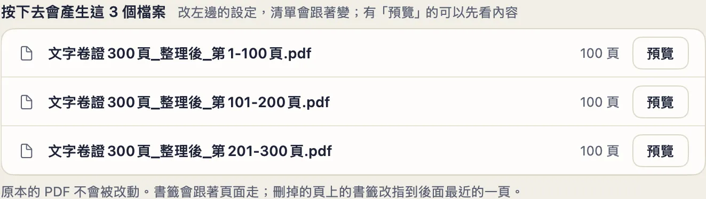
合併的時候，每一份會自動加上一個以檔名為名的書籤，原本的書籤排在它底下。所以合併、重排之後選「依第一層書籤拆開」，可以再依原本的檔案分開。
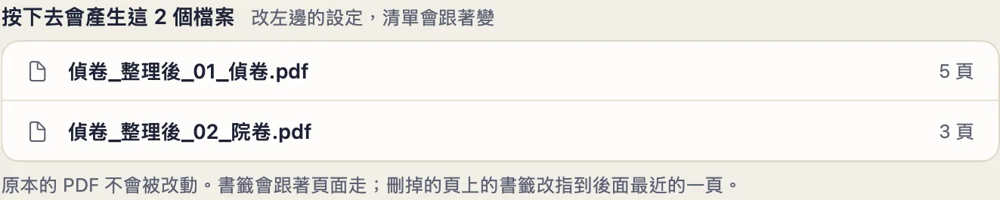
書籤會跟著頁面走；刪掉的頁上的書籤，改指到後面最近的一頁。確認好了，按右上角的「開始輸出 N 個檔案」。
輸出的檔案
- 存成一份：「第一份的檔名_整理後.pdf」。
- 依拆開的地方或每 N 頁：「…_整理後_第1-8頁.pdf」這樣，檔名寫著頁碼範圍（整理後的頁碼）。
- 依書籤：「…_整理後_01_書籤標題.pdf」，依序編號。第一個書籤前面還有頁面時，那些頁先出一份「書籤前」。
檔案存在「下載項目 › 審判工具箱」底下這次新開的資料夾，例如「偵卷 頁面整理」。
在 iPhone・iPad 上
在 iPhone 上，縮圖排成三到四欄，動作收在畫面下方一列：旋轉、刪除、拆開、空白頁、加一份，改過之後多一個「復原」。點縮圖就加選或取消那一頁，不用按住其他鍵。
縮圖
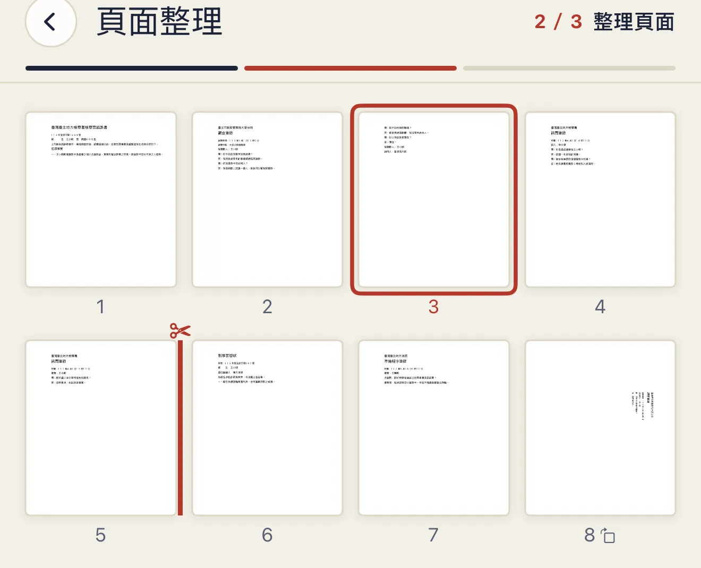
畫面下方
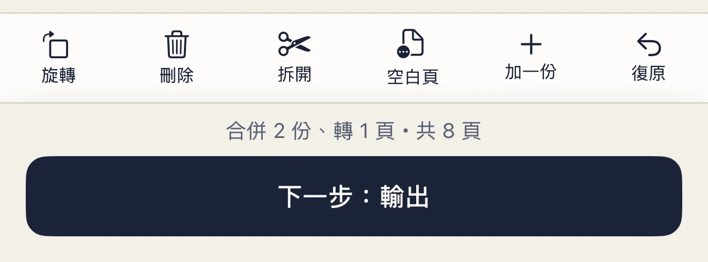
iPad 的視窗夠寬時跟 Mac 相同，動作按鈕在縮圖上方一列。用相機掃描好的 PDF，可以在「接著用其他工具處理？」裡直接選「頁面整理」。輸出的檔案在「檔案」App 的「我的 iPhone（iPad）› 審判工具箱」。細節在在 iPhone・iPad 上使用。
做不到的事／要注意
- 不會偵測頁面方向，掃反的頁要自己找出來旋轉。
- 找空白頁只看墨色，可能把很淡的頁當成空白。刪之前請看縮圖。
- 沒有裁切頁面、調整頁面大小的功能。大小不一的頁面要統一成 A4，用圖片與掃描的「縮放成 A4」。
- 合併時不會保留原檔的表單欄位、內嵌附件。
- 「依第一層書籤拆開」需要 PDF 本身有書籤。沒有書籤的卷，可以先用書籤形成加上書籤，或在這裡用「從這裡拆開」。
下一篇：圖片轉 PDF、PDF 轉圖片：圖片與掃描教學。簡短的步驟在使用說明。
常見問題
找空白頁會不會刪掉有字的頁？
App 不會自己刪。找到的頁只用虛線框標出來，要你按「逐頁確認」或「全部照建議處理」才刪；很淡的鉛筆字可能被當成空白，請先看縮圖。刪錯了可以按「復原」。
合併之後還能分回原本的幾份嗎？
可以。合併時每一份會加上一個以檔名為名的書籤，輸出時選「依第一層書籤拆開」，就依原本的檔案分開。
可以把掃反的頁自動轉正嗎？
不行，App 不會偵測頁面方向。請在縮圖上找出掃反的頁，選起來按「旋轉選取的頁」。